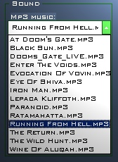

지금 바로 Soldat 등록을 원하시는 분은 여기를 눌러주세요.
정식 등록에 따른 혜택을 알고 싶으시다면 아래의 글을 읽어주세요.
정식 등록자에게 주어지는 혜택
Soldat은 무료로 즐길 수 있지만, 정식 등록을 고려해 주신다면 고맙겠습니다.
한 분 한 분 정식 등록을 해 주실 때마다 제작자는 큰 힘을 얻고, 개발에 필요한 자금도
꾸려나갈 수 있게 됩니다. 정식 등록은 이 게임이 나날이 발전하는, 살아있는 게임이 되도록 도와주시는 길입니다.
정식 등록에 드는 비용은 단돈 9달러, 한국 돈으로 만 원 정도입니다. Soldat을
재미있게 즐기셨다면, 정식 등록을 한번 고려해주신다면 감사하겠습니다.
좋은 일 했다는 기분이랑, Soldat 커뮤니티에서 정식 등록 회원으로 추대되었다는 사실 외에도,
정식 등록에 따른 혜택은 여러 가지가 있습니다:
게임:
프로필(Profile)을 마음대로 만들 수 있습니다.

수십 가지의 서로 다른 게임 설정을,
각각의 프로필 데이터로 저장할 수 있습니다.
프로필을 이용하면, 이전에 설정했던 게임 옵션, 셋업 옵션, 서버 세팅, 플레이어 이름, 캐릭터의 외양 등의
다양한 설정값을 한 번의 조작으로 쉽게 바꿀 수 있습니다..
위의 스크린샷은 프로필의 사용 예입니다.
인터페이스를 바꿀 수 있습니다.

게임 속 인터페이스의 모습, 위치, 동작을 바꿔 보세요.
Soldat의 기본 인터페이스에게 질린 분들을 위해, 인터페이스를 바꿀 수 있는 기능을 제공합니다.
Soldat에는 기본으로 몇 종류의 다른 인터페이스가 포함되어 있습니다.
만약 여기 있는 인터페이스 이외의 것을 쓰고 싶으신 분은, 다른 사용자가 만든 데이터를 다운로드해서 쓰거나
직접 인터페이스를 만들어 쓸 수도 있습니다!
|
|
|
|
|
|
|
|
|
|
|
|
MP3 파일을 들을 수 있습니다.

여러분이 좋아하는 음악이 담긴 MP3 파일을 게임의 배경음악으로 쓸 수 있습니다.
Soldat이 설치된 폴더 안의 'mp3' 폴더에 음악 파일을 복사하고, 옵션 메뉴에서 연주할 곡의 목록을 만들어보세요.

게임 중에 F5를 누르면 음악을 재생하거나 멈출 수 있으며, F6을 누르면 다음 트랙으로 넘어갑니다.
데모 녹화 기능에 있던 시간 제한이 없어집니다.
비등록판 버전에서는 데모 녹화(F8키로 녹화 가능)가 가능한 시간이 3분으로 제한되어 있습니다. Soldat 정식 등록 버전에는 이 제한이 없습니다. 전투의 처음부터 끝까지, 생생한 기록을 담아보세요!
RESOLUTION CHANGE
Non-registered Soldat players can only play the game with the small default resolution 640x480. After registration you can change it to whatever you want, 800x600, 1024x769, 1280x1025, 1600x1200! Bigger resolution means more space for the game. Interfaces, chat texts, kill logs and score boards become small leaving the rest for the gameplay!


귀찮은 등록 권유 화면이 나오지 않습니다.
정식 등록을 하고 난 후에는,
게임을 실행할 때마다 나오는 귀찮은 정식 등록 안내 화면이 더 이상
나오지 않습니다.
Soldat 커뮤니티의
명예 회원으로 추대됩니다.
정식 등록
버전의 Soldat에서는, 게임 중에 F1키를 눌러
볼 수 있는 스코어보드에서 여러분의 이름 옆에 특별한 표시 - 밝은 금별 표시 - 가 나타납니다.
이 표시는, 여러분이 Soldat 커뮤니티의 명예 회원임을 다른 사람들이 알 수 있도록 해 줍니다.

Jet(제트)의 불꽃 색깔을 조절할 수 있습니다.
정식 등록 버전에서는 제트(Jet)의 불꽃 색깔을 마음대로 바꿀 수 있습니다.
노란색 불꽃이 지겨우시다면, 정식등록을 하셔서 색깔을 바꿔 보세요.
자신만의 독특한 제트 불꽃 색을 지정하면, 전장에서 서로를 구분하는 데 도움을
줄 수 있습니다. 이 기능은 정식 등록판 사용자 외에는 쓸 수 없는 기능이니까요.


인터페이스 제작기:
기존의 인터페이스를 편집할 수 있습니다.
인터페이스 제작기를 사용해서
Soldat에서 쓰이는 인터페이스를 바꿀 수 있습니다.
예를 들어 상태창의 위치가 마음에 들지 않는다면, 인터페이스 제작기에서 간단히
원하는 곳으로 위치를 옮길 수 있습니다.
새 인터페이스를 직접 만들 수도 있습니다.
여러분만의 인터페이스를 만들어보세요!
인터페이스 제작기를 사용하면 작업이 무척 쉬워집니다.
모든 요소를 만들기가 힘들다면, 기본 인터페이스에서 몇 가지 요소를 따 와서 쓸 수도 있습니다.
예를 들어, 나만의 조준 커서를 직접 만들고 싶다면 인터페이스 제작기를 사용해서
커서를 바꾸세요. 간단한 작업으로 게임에서 보이는 커서를 바꿀 수 있습니다.
등록비를 내는 방법은 두 가지가 있습니다:
|
PLIMUS을 통한 결재 이 방법으로 결재하시는 것을 추천합니다. 아래의 링크를 누르면 Plimus의 Soldat
정식 등록 페이지로 이동합니다: |
|
SHARE-IT을 통한 결재 유럽에 사는 분들께는 이 방법을 추천합니다
(은행 수수료가 싸게 먹히고, 독일어, 프랑스어, 스페인어, 이탈리어를 지원합니다). 아래의 링크를 누르면 Share-It의 Soldat
정식 등록 페이지로 이동합니다: |
한번에 세 명 이상의 사용자를 등록하시거나 클랜 단위로
정식등록을 하신다면, 좀더 싼 가격으로 등록을 하실 수 있습니다.
자세한 사항을 알고 싶으신 분은 저에게 메일을 보내주세요.
등록이 끝나면, 정식 등록 레지스트리 파일이 들어있는 압축 파일을 메일로 받게 됩니다.
압축을 풀어 나온 등록 레지스트리를 실행하면, 앞으로 Soldat의 모든 기능을 사용할 수 있게 됩니다.
등록 기간은 평생(lifetime)입니다(앞으로 나올 Soldat의 새 버전도 그대로 사용할 수 있습니다).
DigitalCandle이나 Share-It 쪽에서 결재 알림 메일이 날아오면,
제가 그걸 받아서 확인한 후
여러분꼐 직접 등록 레지스트리 파일을 보내드리고 있습니다.
만약 결재한 지 48시간이 지나도 레지스트리 파일이 도착하지 않았다면, 저에게
개인적으로 연락을 주십시오 michal.marcinkowski<AT>gmail.com.
감사합니다.